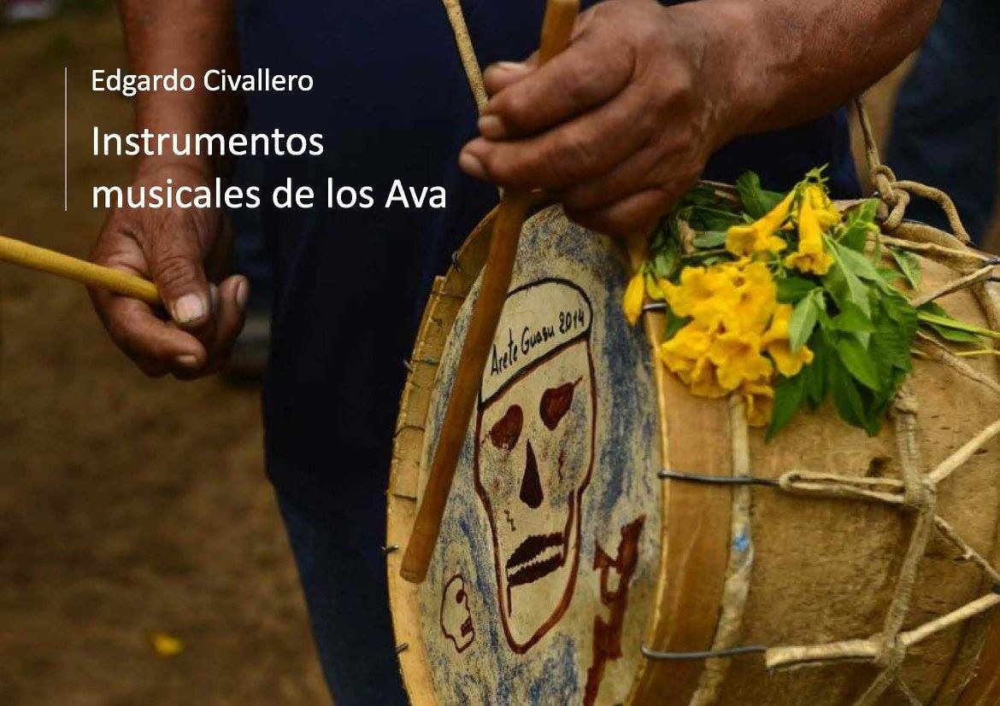

Instrumentos musicales de los Ava
Inicio > Libros digitales sobre música > Instrumentos musicales de los Ava
Cómo citar este trabajo: Civallero, Edgardo (2025). Instrumentos musicales de los Ava. Edición de archivo. Bogotá: El Zorro de Abajo Editora.
Descargar en PDF.
Este libro presenta un estudio exhaustivo sobre el universo sonoro del pueblo Ava-Guaraní —también llamados chiriguanos—, un grupo de raíces tupí-guaraníes que se asentó entre el oriente boliviano, el Chaco y el noroeste argentino. A través de un análisis detallado de fuentes etnográficas, lingüísticas y organológicas, se reconstruye la historia, estructura y función simbólica de los instrumentos tradicionales de esta cultura, enmarcándolos en su contexto ritual, agrícola y social.
El texto abre con una amplia introducción histórica que presenta a los Ava como descendientes de migraciones amazónicas que buscaron la mítica iwóka, la "Tierra sin Mal". Su llegada al sur de las tierras bajas bolivianas implicó la conquista de los Chané y enfrentamientos con pueblos vecinos y con el Imperio incaico, antes de resistir durante siglos la colonización española. Esa memoria guerrera impregna sus prácticas sonoras, que se expresan sobre todo en el aréte guásu, la "fiesta grande" del maíz, donde vivos y muertos se reúnen mediante música, danza y chicha. En esa celebración se articula el repertorio instrumental que el libro documenta: una organología compleja y simbólicamente marcada.
Los membranófonos conforman la base rítmica del conjunto. El angúa guásu, "tambor grande", hecho de cedro o roble criollo y con cueros de corzuela, iguana o lagartija, se considera un instrumento femenino, capaz de convocar a los espíritus durante el aréte. Le siguen el angúa rái, "tambor hijo", de tamaño medio, y el míchi rái, "hijo pequeño", ambos masculinos. Estos tambores, elaborados con gran precisión técnica —paredes ahuecadas, aros de madera dura, amarras de fibras vegetales—, se tocan con mazas o palillos y marcan el pulso de las flautas, articulando la danza colectiva. La relación jerárquica entre tambores refleja una cosmología familiar y ritual, donde cada timbre tiene un género, una edad y una función.
Entre los cordófonos, el turúmi o mióri destaca como la única cuerda autóctona. Es una adaptación local del violín, tallado en una sola pieza de cedro y tocado con un arco de fibras vegetales o cerdas equinas. Aunque probablemente introducido por misioneros franciscanos, el instrumento fue apropiado por los Ava hasta integrarlo en su propio ciclo ritual. Se interpreta en Pascua y durante el "tiempo de tairári", acompañando cantos catárticos que expresan emociones y memoria. Su técnica —sin presión total de la cuerda sobre el diapasón— revela una continuidad con los arcos musicales preexistentes, manteniendo la fluidez melódica propia de la estética indígena.
Los aerófonos constituyen el grupo más diverso. La temímby púku o flauta larga, similar a la quena andina, se asocia a la expresión erótica masculina y a los ritos estivales. La temímby ye piása, flauta traversa heredera de las misiones jesuíticas, acompaña rondas pascuales junto al turúmi y los tambores. La temímby guásu, flauta vertical de más de un metro, de caña o metal, produce escalas pentatónicas y participa en contextos de seducción y baile. El pinguyo, flauta de pico con silbatos laterales imémby, constituye una creación híbrida única: combina elementos de los pinkillos andinos con una sonoridad bifónica obtenida por tubos de pluma.
Otros aerófonos incluyen el añáchi, silbato de hueso reservado al hechicero imbaékwa, y las trompetas wakaránty o wakaráe púnta, construidas con caña y cuerno o cuero de vaca moldeado. Estos instrumentos, antes usados para la guerra o la siembra, hoy anuncian el inicio del aréte guásu. Los iguaéru o "porongos", bocinas de calabaza, y los silbatos serére y yvýra mímby completan una familia de sonidos que oscilan entre lo bélico, lo festivo y lo mágico. Los testimonios históricos —de Giannecchini a Sánchez— describen cómo estos silbatos servían tanto para convocar danzas como para infundir temor en combate, una dimensión sonora que trasciende la música y se adentra en el territorio del mito.
Entre los idiófonos, destacan el yandúgua, bastón de ritmo adornado con plumas de avestruz, usado por el yingári o maestro de danza para marcar compases en el ayarisse, canto en honor a Ñandú Tumpa, y las tobilleras yvýra nambichái, hechas con semillas secas de enredaderas. Estos instrumentos, ligados al movimiento corporal, reafirman la conexión entre ritmo, tierra y colectividad.
El estudio concluye evidenciando cómo cada objeto sonoro forma parte de un sistema simbólico donde el aire, la madera, la piel o el metal son extensiones del cuerpo social. La música de los Ava es tanto una herramienta de cohesión como un archivo vivo de resistencia. Sus flautas, tambores y trompetas no solo suenan: narran la persistencia de un pueblo que convirtió el soplo, el golpe y la cuerda en memoria colectiva.